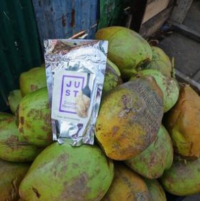

Sustainable farming in Liberia is just the beginning. We believe that Liberia and West Africa can feed themselves through sustainable, agricultural practices and modern processing techniques. Food security continues to be a major problem not only in Liberia and West Africa, but also throughout several other developing nations around the world. Our aim at Kawadah Farms is to produce Nutritious and easily accessible food options, as well as create opportunities that allow local farmers and processors greater access to the domestic, regional and global marketplace thus leading to more financial stability for themselves and their families.
Cassava is the third-largest source of food carbohydrates in the tropics, after rice and maize. Cassava is a major staple food in the developing world, providing a basic diet for over half a billion people. It is one of the most drought-tolerant crops, capable of growing on marginal soils. Nigeria is the world's largest producer of cassava, while Thailand is the largest exporter of cassava starch.
Our first product to market is Power Gari, which we have produced in partnership with JUST. This revolutionary take on traditional gari is a highly nutritious meal made of locally grown cassava, palm oil, cane sugar, soy protein, salt and vitamins.